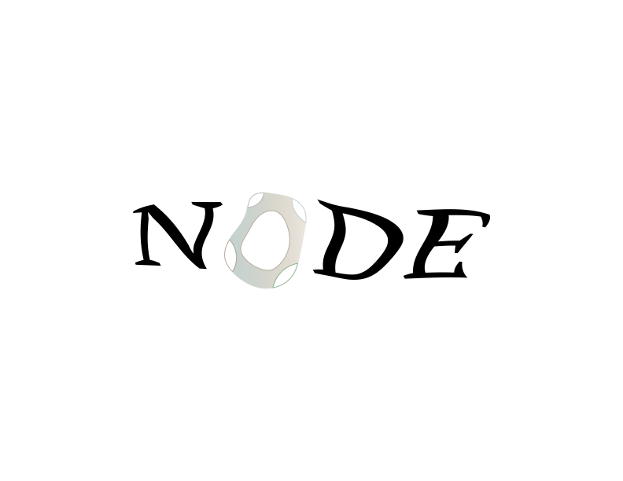

PROCESS JOURNAL
This page serves as a journal to document the development of projects for visual & media design. The intention of this site is to show how ideas form in me, how they change and develop over time, and how all of these projects ultimately come together. Rather than exclusively highlighting the finished projects in the visual & media design program, this online reflection focuses on the processes behind them.

Initial Concept
I was trying to create a cover that was more about the emotional quality of the story than the literal images. Instead of illustrating the fisherman or the ocean, I chose to convey the ideas of movement and strength in a graphic way.
Early Sketches
I experimented with tilting lettering to give the feel of instability. Some designs were a bit too busy. I adjusted them to a more simple and modern layout.
Refinement
I adjusted the color gradients to convey the depths of the ocean, incorporating pale colors into blues. The finished design incorporates simplicity and the illusion of movement to remain true to the minimal style of the designs I create.

Idea Exploration
The album started off as a journey into dreams. Within that period, the disturbed nights and nightmares influence my mood of the album. Instead of being a demonstration of horror in all its graphic glory, I have always wanted to capture the quiet disturbance of the dreams.
Drafts & Tests
I started experimenting in symbols and textures to convey the misty quality of troubled sleep. I worked in images that seemed fragile, distorted, or incomplete, the form of a dream more than the form of a picture. The shattered doll head appeared in this series. After many attempts, I narrowed the composition to convey both discomfort and quiet.
Final Adjustments
I adjusted the color scheme to give the image a muted quality of a dream-filled atmosphere. I also worked on the texture to try to convey the sense of drifting. These details helped to integrate the artwork to reflect the image of a restless night of sleep that may not scare but unsettles.

Concept
This piece was inspired by the words of Bruce Lee himself when he said “Be like water,” I would hope to have a layout that breathes fluidly.
Sketches
I experimented with a number of wave designs to think about how they would translate from one spread to the next. The goal was to look fresh while remaining clean.
Design Decisions
To promote a calm atmosphere in the spread, I chose a monochromatic blues scheme. On the right side of the spread is the quote. The left side initiates the theme of balance.

This started as a small portrait for a friend, simple character designs, and gentle color schemes. I experimented to see how much personality a character could have based on a simple set of characteristics.

As with the Cute Icon, this illustration was created for a friend of mine. Instead of going for a more complex illustration, I focused on simple lines to see how one can convey a great deal about a person with very simple depictions.
NODE Logo
Concept Development
NODE was a logo designed for a brand in the context of one of the design projects I worked on. Its concept revolves around the ideas of connection and structure, both of which seem to suit the brand that represents the community and creativity well.
Exploration
I developed a series of possible variation on the graphic, including ideas of symmetry, interconnected letters, gentle forms that competed “nodes,” or intersections. Some versions became too intricate; therefore, some simplification of the mark was required.
Final Direction
The overall logo design brings strong typography to give a modern and reliable logo identity that also resonates well with the overall minimalist approach.
Evolving My Creative Process
Through all of these projects, I have learned the importance of iteration in the process. I enjoy the processes of crafting with negative space, lines, and composition. I am also learning about the possibilities of simplicity in expressing emotions. With this journaling activity, I have the opportunity to document the growth of all ideas over time.